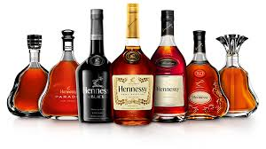

Издавна коньяк считается одним из элитных алкогольных напитков. Его принято дарить на любые торжества, причем это очень престижный подарок, который выражает уважение к человеку. Но не так много людей знают, как правильно пить коньяк. Для того чтобы почувствовать аромат и вкус этого спиртного напитка его следует употреблять, соблюдая определенные правила. Хотя водка и коньяк очень похожи по составу, но пьются они совершенно по-разному. Сейчас вы узнаете, как именно.
Любители коньяка считают, что перед его употреблением сначала следует проникнуться уважением к самому напитку. Ваша одежда и окружение должны быть соответствующими. Пить коньяк советуют в праздничной одежде – деловом костюме или вечернем платье. В качестве места отлично подойдет гостиная, ресторан, банкетный зал или офис. Неуважительно по отношению к коньяку употреблять его в домашней одежде или на кухне, так вы никогда не оцените истинный вкус этого благородного напитка.
Чтобы получить положительные эмоции от дегустации коньяка, нужно уметь ощущать его аромат. Даже специальный бокал, в котором пьют коньяк, называется «снифтер», что в переводе с английского языка значит «нюхать». Такой бокал изображен на картинке.
Пьют коньяк следующим образом: сначала наливают 30-40 миллилитров напитка в бокал и дотрагиваются пальцем до его наружной стенки. Так определяют качество коньяка. Если с другой стороны вашего бокала видны отпечатки пальцев, это значит, что сейчас вы дегустируете действительно качественный напиток. Затем бокал начинают медленно вращать вокруг собственной оси. При этом на стенках бокала появляются следы напитка (их называют «ножками»), на эти следы нужно обращать особое внимание. Если «ножки» видны в течение 5 секунд, то это значит, что перед вами коньяк с выдержкой 5-8 лет, если 15 секунд – напитку примерно 20 лет.
Отдельно следует упомянуть о трех «волнах» запахов коньяка. Первую волну можно ощутить на расстоянии примерно в 5 сантиметров от краев бокала, здесь преобладают легкие и ванильные тона. Вторая волна запаха начинается непосредственно возле краев, ощущаются фруктовые и цветочные ароматы. В высококачественном напитке вы обязательно почувствуете аромат липы, фиалки, розы или абрикосов. В третью волну входят запахи выдержки, это сложные тона, они чем-то напоминают запах портвейна. Насладившись запахом напитка, переходят к его употреблению.
Коньяк принято пить небольшими глотками. При этом должен хорошо ощущаться эффект «хвост павлина» – напиток распространяется во рту, оставляя приятное послевкусие. Можно еще погреть бокал с коньяком у себя в ладони. Температура коньяка должна быть выше комнатной, именно тогда вы ощутите истинный вкус и аромат.